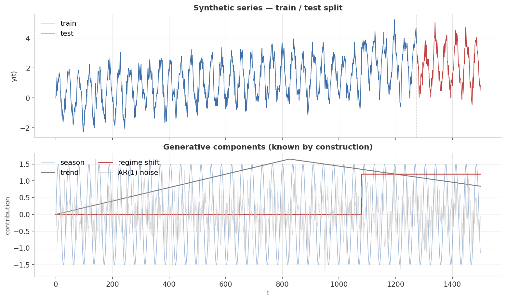
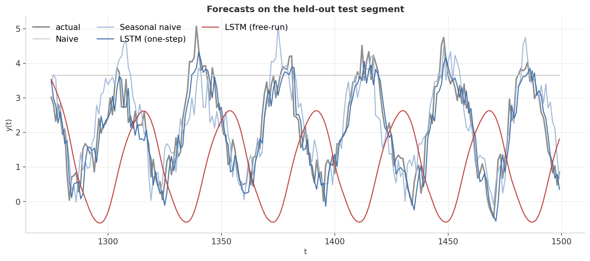
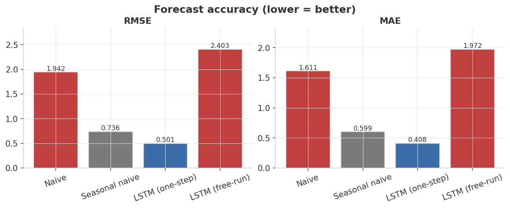
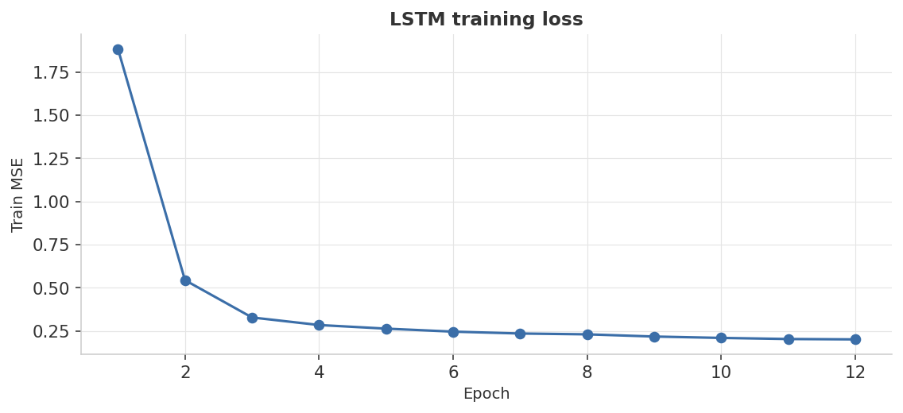

0.5008
LSTM One-Step RMSE
Best — beats both baselines
0.7364
Seasonal Naive RMSE
Competitive baseline (period = 36)
2.4033
LSTM Free-Run RMSE
Worst — error compounds over 225 steps
Forecast scorecard
| Method | RMSE | MAE |
|---|---|---|
| Naive (last value) | 1.9421 | 1.6108 |
| Seasonal naive (period = 36) | 0.7364 | 0.5995 |
| LSTM (one-step) | 0.5008 | 0.4081 |
| LSTM (free-run) | 2.4033 | 1.9716 |
● navy = best in column ● orange = worst / notably bad ● gray = neutral baseline · values from
results/metrics.jsonHeadline finding: the same LSTM is the best and the worst method here, depending on how you ask it to forecast. With actual history at every step (one-step) it cleanly beats both naive baselines (RMSE 0.501 vs. 0.736). Asked to roll forward 225 steps on its own predictions (free-run), the small per-step errors compound into a forecast that drifts off in completely the wrong direction (RMSE 2.403 — worse than seasonal naive). This split is the single most underappreciated thing about deep-learning forecasting.
Visual diagnostics
1 · The series — and what's inside it
Top: full 1,500-step series, blue = train (85%), red = test (15%). Bottom: the four generative components plotted separately — sinusoidal seasonality, piecewise-linear trend, AR(1) noise, and the regime-shift step.

2 · Forecasts on the test segment
Four lines on top of the actual (gray): Naive (flat line), Seasonal naive (copies one cycle ago), LSTM one-step (tracks closely), LSTM free-run (starts plausibly, then drifts). The visual is the lesson.

3 · Forecast accuracy
RMSE and MAE both rank identically: LSTM one-step < Seasonal naive < Naive ≈ LSTM free-run. The 4× gap on the same model is the practical takeaway.

4 · Training dynamics
Training MSE drops from ~1.9 to ~0.2 over 12 epochs. The plateau at ~0.20 matches the AR(1) noise variance (σ² = 0.16) — the LSTM has saturated the recoverable information.

Metric definitions
Metrics — computed on the 225-step held-out test segment (steps 1,275 – 1,499)
No MAPE is computed because y(t) passes through zero (sinusoidal component), making percent errors undefined at certain timesteps.
| Metric | Definition | How to read it |
|---|---|---|
| RMSE | √mean squared error | Typical error in units of y. Penalizes large misses more than MAE. An LSTM at RMSE ≈ 0.5 has nearly saturated what is recoverable given AR(1) noise σ = 0.4. |
| MAE | mean absolute error | Median-ish error magnitude, less sensitive to outliers. LSTM at MAE 0.408 is essentially at the AR(1) σ = 0.4 floor. |
One-step vs. free-run evaluation
Two distinct evaluation modes
| Mode | Context used | What it reveals |
|---|---|---|
| One-step | Actual series values y[t−72 : t] at every test step | Fair evaluation for a deployed model that receives real data each tick |
| Free-run | Model's own previous predictions for all 225 steps | Error compounding under autoregressive feedback — the multi-step failure mode |
The LSTM one-step forecast (RMSE 0.501) beats seasonal naive (RMSE 0.736). The LSTM free-run (RMSE 2.403) does not — it is worse than both baselines, which is the intended lesson about distribution shift and error compounding.
Full results
| Method | Test RMSE | Test MAE |
|---|---|---|
| Naive (last value) | 1.9421 | 1.6108 |
| Seasonal naive (period = 36) | 0.7364 | 0.5995 |
| LSTM (one-step) | 0.5008 | 0.4081 |
| LSTM (free-run) | 2.4033 | 1.9716 |
Exact values from
results/metrics.json, regenerated on every python train.py. Bold = best in column. Seed caveat: "LSTM one-step wins" is stable; the exact third-decimal values are seed-dependent. The robust finding is the direction of the comparison (LSTM one-step > seasonal naive; free-run degrades severely).Run it yourself
# 1. environment python3 -m venv .venv && source .venv/bin/activate pip install -r requirements.txt # 2. generate the synthetic dataset (deterministic, seed 42) python generate_data.py # 3. train, evaluate, render the dashboard figures python train.py
Total wall-time: under 30 seconds on CPU. Produces the four PNGs in
assets/ and the metric summary in results/metrics.json.Tweak the difficulty
DataConfig(
n_steps=1500,
season_period=36,
season_amp=1.5,
trend_slope=0.002,
trend_break_at=0.55, # where slope flips sign
ar1_phi=0.55, ar1_sigma=0.4,
regime_shift_at=0.72,
regime_shift_size=1.2,
seed=42,
)
Crank
ar1_sigma up to 1.5 to make noise drown the signal, or set season_period=240 to test how well a 72-step context window can still pick up a 240-step cycle (it can't — that's a context-window failure mode).